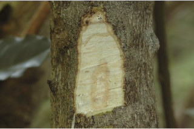
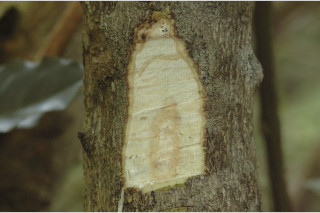
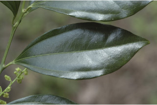
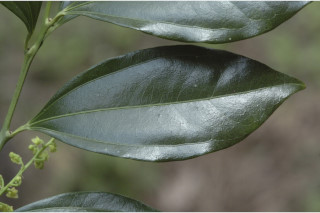

Large shrubs or small trees, to 6 m tall.
ದೊಡ್ಡ ಪೊದೆಗಳು ಅಥವಾ 6 ಮೀ. ಎತ್ತರದವರೆಗೆ ಬೆಳೆಯುವ ಸಣ್ಣ ಮರಗಳು.
Large shrubs or small trees, to 6 m tall.
பெரிய குத்துச்செடி முதல் சிறிய மரம் 6 மீ. உயரம் வரை வளரக்கூடியது.
Bark shallowly reticulately fissured; blaze white.
ತೊಗಟೆ ಆಳವಿಲ್ಲದ ಜಾಲಬಂಧ ಸೀಳಿಕಾ ಮಾದರಿಯವು; ಕಚ್ಚು ಮಾಡಿದ ಜಾಗ ಬಿಳಿ ಬಣ್ಣದಲ್ಲಿರುತ್ತದೆ.
Bark shallowly reticulately fissured; blaze white.
மரத்தின் பட்டை மெல்லிய வலைப்பின்னல் பிளவுகளுடையது; உள்பட்டை வெள்ளை நிறமானது.
Young branchlets subterete, sparingly hairy, glabrous when mature.
ಎಳೆಯ ಕಿರುಕೊಂಬೆಗಳು ಉಪ-ದುಂಡಾಗಿದ್ದು ವಿರಳವಾದ ರೋಮಸಹಿತವಾಗಿದ್ದುಬಲಿತಾಗ ರೋಮರಹಿತವಾಗಿರುತ್ತದೆ.
Young branchlets subterete, sparingly hairy, glabrous when mature.
சிறியநுனிக்கிளைகள் குறுக்குவெட்டுத் தோற்றத்தில் வளையமானது, குறைந்தளவு உரோமங்களுடையது, முதிரும் போது உரோமங்களற்றது.
Leaves simple, alternate, spiral; petiole 0.7 cm long, canaliculate, glabrous; lamina 3.3-10.3 x 1.7-3.5 cm, elliptic-oblanceolate, apex acuminate with blunt tip, base acute-cuneate, margin entire, chartaceous, shining above, glabrous; midrib raised above; triplinerved; tertiary_nerves broadly reticulate.
ಎಲೆಗಳು ಸರಳವಾಗಿದ್ದು ಪರ್ಯಾಯ ಮತ್ತು ಸುತ್ತು ಜೋಡನಾ ವ್ಯವಸ್ಥೆಯಲ್ಲಿರುತ್ತವೆ ; ತೊಟ್ಟುಗಳು 0.7 ಸೆಂ.ಮೀ.ಉದ್ದವಿದ್ದು ಕಾಲುವೆ ಗೆರೆ ಸಮೇತವಿರುತ್ತವೆ ಹಾಗೂ ರೋಮ ರಹಿತವಾಗಿರುತ್ತವೆ;ಪತ್ರಗಳು 3.3-10.3 X1.7- 3.5 ಸೆಂ. ಮೀ.ವರೆಗಿನ ಗಾತ್ರ, ಚತುರಸ್ರ – ಬುಗುರಿ - ಈಟಿಯ ಆಕಾರ, ಮೊಂಡು ಅಗ್ರವುಳ್ಳ ಕ್ರಮೇಣ ಚೂಪಾಗುವುದರಿಂದ ತುದಿ ,ಚೂಪಾದ – ಬೆಣೆಯಾಕಾರದ ಬುಡ,ನಯವಾದ ಅಂಚು,ಕಾಗದವನ್ನೋಲುವ ಮೇಲ್ಮೈ,ಹೊಳಪುಳ್ಳ ಮೇಲ್ಭಾಗ ಹೊಂದಿದ್ದು ರೋಮರಹಿತವಾಗಿರುತ್ತವೆ; ಮಧ್ಯನಾಳ ಪತ್ರದ ಮೇಲ್ಭಾಗದಲ್ಲಿಮೇಲೆದ್ದಿರುತ್ತದೆ; ನಾಳಗಳು 3;ಮೂರನೇ ದರ್ಜೆಯ ನಾಳಗಳು ವಿಶಾಲ ಜಾಲಬಂಧ ನಾಳ ವಿನ್ಯಾಸದವು.
Leaves simple, alternate, spiral; petiole 0.7 cm long, canaliculate, glabrous; lamina 3.3-10.3 x 1.7-3.5 cm, elliptic-oblanceolate, apex acuminate with blunt tip, base acute-cuneate, margin entire, chartaceous, shining above, glabrous; midrib raised above; triplinerved; tertiary_nerves broadly reticulate.
இலைகள் தனித்தவை, மாற்றுஅடுக்கமானவை, சுழல் போன்று அமைந்தவை; இலைக்காம்பு 0.7 செ.மீ. நீளமானது, குறுக்குவெட்டுத் தோற்றத்தில் கேனாலிகுலேட், உரோமங்களற்றது; இலை அலகு 3.3-10.3 X 1.7-3.5 செ.மீ., நீள்வட்ட வடிவானது-தலைகீழ் ஈட்டி வடிவானது, அலகின் நுனி அதிக்கூரியதுடன் அதன் முனை மழுங்கியது, அலகின் தளம் கூரியது-ஆப்பு வடிவானது, அலகின் விளிம்பு முழுமையானது, சார்ட்டேசியஸ், அலகின் மேற்பரப்பு பளபளப்பானது, உரோமங்களற்றது; மையநரம்பு மேற்புறத்தில் அலகின் பரப்பைவிட உயர்ந்து இருக்கும்; தளத்திலே 3 நரம்புகளை உடையது; மூன்றாம் நிலை நரம்புகள் அகன்ற வலைப்பின்னல் போன்றவை.
Inflorescence axillary panicles; flowers unisexual; male flowers yellow; female flowers greenish yellow.
ಪುಷ್ಪಮಂಜರಿಗಳು ಅಕ್ಷಾಕಂಕುಳಿನಲ್ಲಿರುವ ಪುನರಾವೃತ್ತಿಯಾಗಿ ಕವಲೊಡೆಯುವ ಮಧ್ಯಾಭಿಸರ ಮಾದರಿಯವು; ಹೂಗಳು ಏಕ ಲಿಂಗಿಗಳು;ಗಂಡು ಹೂಗಳು ಹಳದಿ ಬಣ್ಣ ಹೊಂದಿರುತ್ತವೆ;ಹೆಣ್ಣು ಹೂಗಳು ಹಸಿರು ಮಿಶ್ರಿತ ಹಳದಿ ಬಣ್ಣದವು.
Inflorescence axillary panicles; flowers unisexual; male flowers yellow; female flowers greenish yellow.
மஞ்சரி தண்டின் இலைக்கோணங்களில் காணப்படும் பேனிக்கிள்; மலர்கள் ஓர் பாலானவை; ஆண் மலர்கள் மஞ்சள் நிறமானவை; பெண் மலர்கள் பச்சை-மஞ்சள் நிறமானவை.
Drupes, compressed, ca. 0.6 cm across, glabrous, depressed at either ends; seed 1.
ಡ್ರೂಪ್ಗಗಳು ಅದುಮಿದ ಆಕಾರದಲ್ಲಿದ್ದು ಅಂದಾಜು 0.6 ಸೆಂ.ಮೀ.ಅಡ್ಡಗಲತೆ ಹೊಂದಿದ್ದು ರೋಮರಹಿತವಾಗಿರುತ್ತವೆ, ಎರಡೂ ತುದಿಯಲ್ಲಿ ಕುಗ್ಗಿರುತ್ತದೆ;ಬೀಜಗಳು 1.
Drupes, compressed, ca. 0.6 cm across, glabrous, depressed at either ends; seed 1.
உள்ளோட்டுத்தசைகனி (ட்ரூப்), தட்டையானது, 0.6 செ.மீ. குறுக்களவுடையது, உரோமங்களற்றது, இரு முனை அழந்தியவை; ஒரு விதையுள்ள கனி.
 

 
